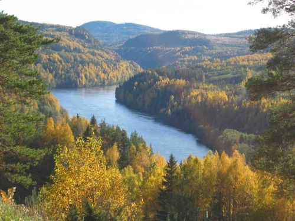
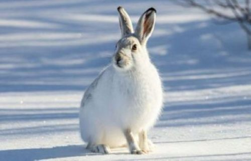

Medelpad

Medelpad är ett landskap som tillhör Västernorrland, Mellannorrland och nedre norrland.Första dokumenterade omnämnandet av Medelpad är från 1257. Namnet tros komma från fornsvenskans Medhal ("i mitten") och Pad ("stig" eller "vattenväg"), vilket kan syfta på Sankt Olofsleden eller centrala strandområden vid Selångersfjärden
Större städer i Medelpad
- Sundsvall
- Timrå
- Ånge

Ett populärt besöksmål är Norra Berget, där du får uppleva historiska byggnader och fin utsikt över staden. För naturupplevelser är Södra Berget ett uppskattat område. Ett annat uppskattat utflyktsmål är Indalsälven, perfekt för paddling och fiske.
Mer om Sundsvall kan du läsa här
Fakta

Area: 7 058 km2
Folkmängd: 125 613
Landskapsblomma: Gran
Landskapsdjur: Skogshare